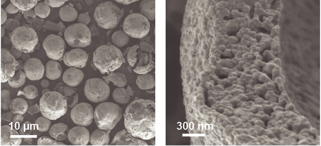
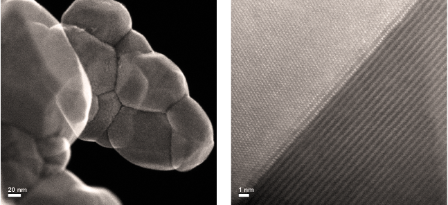

The colors show the uneven distribution of chemical elements on this particle’s surface, which is key to its improved performance in batteries. | Courtesy of Brookhaven National Laboratory and SLAC National Accelerator Laboratory.
If you drive an electric vehicle, you want a battery that recharges fast and holds enough capacity to keep you on the road for long distances before needing a recharge. Same goes for your cell phone and other rechargeable electronic devices. And you’d like the batteries that run these devices to have a long, useful lifespan.
Scientists have long been looking for ways to engineer batteries with better staying power without breaking down under the constant wear and tear of the chemical reactions that provide the power.
Now scientists from the Energy Department’s Brookhaven National Laboratory, Berkeley Lab, and SLAC National Accelerator Laboratory say they’ve found a way to potentially use a simple manufacturing technique to build a high-capacity battery material that protects itself from damage. As the team describes in a paper published in the premier issue of the journal Nature Energy, test batteries incorporating this cathode material could keep going, and going, and going…
The lithium ion shuffle
Chemistry is at the heart of all batteries. Lithium-ion rechargeable batteries power portable electronics and plug-in electric cars by shuttling lithium ions between positive and negative electrodes bathed in an electrolyte solution. As lithium ions move into the cathode, chemical reactions generate electrons that can be routed to an external circuit for use. Recharging pulls lithium ions back out of the cathode and sends them to the anode.
Reactive metals like nickel have the potential to make great cathode materials -- except that they are unstable and tend to undergo destructive side reactions with the electrolyte. But when scientists from Berkeley Lab used spray pyrolysis (a standard manufacturing technique for making powders) to make their cathode material, they ended up with a nickel-rich material that performed much better than expected without breaking down.
“We were at a loss to explain this, and none of our conventional material characterization techniques told us what was going on,” said Berkeley Lab battery scientist Marca Doeff, “so we went to SLAC and Brookhaven to use more advanced imaging techniques” to study the micro- and nanoscale details of the material.
Seeing the surface
X-ray imaging at the Stanford Synchrotron Radiation Lightsource (SSRL) at SLAC and electron microscopy at Brookhaven’s Center for Functional Nanomaterials (CFN) -- two Energy Department Office of Science User Facilities -- revealed that the cathode material was made of spherical particles. These spheres, measuring millionths of meter, or microns, in diameter, were each made up of lots of smaller, faceted nanoscale particles stacked together like bricks in a wall.

On the left you can see spherical cathode particles like the one in the video. As we zoom in to the image on the right, you can see that each one of those spheres is hollow and made up of much smaller particles stacked together like bricks (shown in detail below). | Brookhaven National Laboratory.
According to SLAC scientist Yijin Liu, the x-ray “chemical fingerprinting” revealed that the spherical particles “have more nickel on the inside, to store more energy, and less on the surface, where it would cause problems.” At the same time, the surface of the particles was enriched in manganese. The manganese layer formed an effective barrier, like paint on a wall, protecting the inner structure of the nickel-rich “bricks” from the electrolyte.
The details within
But how were the lithium ions still able to enter the material to react with the nickel? To find out, Brookhaven physicist Huolin Xin and his colleagues at the CFN studied smaller clumps of the nanoscale primary particles with some of the interfaces between them still intact. They used an aberration-corrected scanning transmission electron microscope—a precision instrument outfitted with a pair of "glasses" to improve its vision even more.
These nanoscale images showed that the particles had flat faces like the cut edges of a crystal, which allowed them to pack tightly together without mortar or cement between the bricks. But the scientists also saw a slight misfit between the surfaces -- with the atoms on one side of the interface being ever so slightly offset relative to the atoms on the adjoining particle.

In the left image are the brick-like nanoparticles that make up the cathode particles we looked at above. When we zoom in even further to the atomic level, you can see the interlocking pattern that allows lithium ions to get in and out of the cathode material to charge and discharge the battery. | Brookhaven National Laboratory.
“The packing of atoms at the interfaces between the tiny particles is slightly less dense than the perfect lattice within each individual particle, so these interfaces basically make a highway for lithium ions to go in and out," Xin said.
Like tiny motorcycles, the lithium ions can move along these highways to reach the interior structure of the wall and react with the nickel, while much larger “semi-truck-size” electrolyte molecules can't get in to degrade the reactive material.
These results are potentially significant because they pave the way for making lithium-ion batteries that are cheaper and have higher energy density. “We still want to increase the nickel content even further, and this gives us a possible avenue for doing that,” Doeff said. “We’re not the first ones who have come up with idea of decreasing nickel on the surface. But we were able to do it in one step using a very simple procedure,” she said.
Editor’s Note: This post was based on work done by Brookhaven National Laboratory, Berkeley Lab and SLAC National Accelerator Laboratory, three of the Department of Energy’s 17 National Laboratories
. It has a greater capacity to store energy since it can conduct electricity itself rather than using a polymer binder (such as PVDF, pictured above at left in brown) in the traditional method.")
 at the William R. Wiley Environmental Molecular Sciences Laboratory at the Pacific Northwest National Laboratory is used to image metals, ceramics, minerals, nanostructured materials, and biological-related materials and tissues at atomic-bond-length resolution. | Photo of Pacific Northwest National Laboratory")